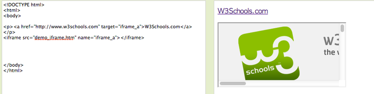

HTML iframe
목록
1. iframe을 이용하여 웹페이지안에 다른 웹페이지를 보여줄 수 있다.
<iframe src="demo_iframe.htm" frameborder="0"></iframe>
2. iframe이 다른 링크의 타겟으로 사용될 수 있다.
W3Schools글자를 클릭하면 iframe안의 페이지가
www.w3schools.com
으로 변경된다.
<p><a href="http://www.w3schools.com" target="goal">W3Schools</a></p>
<iframe src="demo_iframe.htm" name="goal"></iframe>
W3School

<!DOCTYPE html<
<html>
<head>
<meta charset="utf-8">
</head>
<body>
<ul>
<li><a href="https://cafe.naver.com/jjdev" target="_self">jjdev</a></li>
<li><a href="https://cafe.naver.com/jjdev" target="_blank">jjdev</a></li>
<li><a href="https://cafe.naver.com/jjdev" target="one">jjdev</a></li>
<li><a href="https://cafe.naver.com/jjdev" target="two">jjdev</a></li>
</ul>
<iframe src="https://www.daum.net" name="one"></iframe>
<iframe src="https://www.daum.net" name="two"></iframe>
</body>
</html>
jjdev
jjdev
jjdev
jjdev